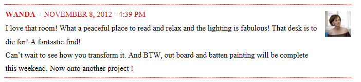

.png)
.PNG)
.PNG)
.PNG)
.PNG)
.PNG)
.JPG)
.JPG)
.PNG)
.PNG)


I so wanted to get this out yesterday, but Saturday’s forest fire put me behind on all I wanted to do with the blog. Then Sunday we were in Atlanta for our daughter’s first musical performance since she has been in college. Three different flute groups performed at the beautiful St. Martins Episcopal School in Atlanta, and they all joined together to play Let There be Peace on Earth for the final piece. Talk about lump in your throat and tears in your eyes beautiful!
Thank you all for leaving your thoughtful comments here over the last 2 weeks. There were over 175 comments, and for my little blog that is great…but you don’t really care about that. You want to know who won, right? 🙂 Okay….drum roll please…the winning comment for the giveaway was this one:
*
*
*
*
*

Congratulations Wanda! I hope you and your family enjoy the pumpkin cupcakes. I found a little extra something to include with the cupcake mix while I was in Atlanta, and I think you will like the surprise, too. I plan to do another giveaway in a couple of weeks for Christmas, so all you dear readers please stick around!
I was a lucky winner recently, too. Christina, from Floridays Mom has bestowed the Liebster Award on me for a small up and coming blog. I don’t know if I can follow all of her rules, but let me see what I can do here.
First rule: Tell 11 facts about yourself.
Second rule: Answer all her questions about me…
(hope they are not too hard. :))
Third rule: Create new questions for another winner to answer.

I know that is not 11 questions like Christina had, but we are hitting the busiest time of the year for most people…so I totally understand if my winners cannot do that many. (Plus I am not always a very good rule-follower!) And to continue with the rule-breaking I am going to bestow this award on only 2 blogs.
Jennifer’s Brave New Home where she will help give you courage to undertake any do-it-yourself project

and
Cindy’s Rough Luxe Perspective where you can see lots of house eye candy.

So you two ladies get to…
1. Tell 7 random facts about yourself. 2. Answer my 7 questions. 3. Create 7 new questions for your winner. 4. Pass the award on to however many bloggers you choose that are small, up and coming, and have less than 200 subscribers. 5. Let me know that you passed it on.(shhhh – don’t tell the blog award folks! Rule breaker here changed the number from 11 down to 7.)
I have no idea if Jennifer’s and Cindy’s blogs are small because I do not know how many subscribers they have, but they are relatively new, and you will enjoy reading them I know.
Now I must confess that I am no longer eligible for the Liebster Award since you all have made me have well above the 200 subscriber limit. Thank you all soooooo very much for being such great readers! To show my gratitude to you for choosing to spend your time with me, here is a little sneak peek at what is coming in the next blog post here…

I hope you will be back.


.PNG)
Wow, Kelly, thanks so much for the nomination! Between you and Christina, you’ve made my week.
I really do appreciate you checking out my lil blog. Take care!
Kelley
What fun questions to answer! Thank you for nominating me and I will get busy and post right away! Congratulations on your daughters success as well! You must be so proud!
Loved reading all your answers and getting to know a little bit more about you. Loved your comment about the lack of pink or purple….I am the same way. I’ll have to try your hot cocoa when it gets colder here, I think the high is in the low 82 today so it might be a while. Ha!
Congrats Wanda on the win for the cupcake mix! Super fun!
Congrats to the winner. Enjoying your blog very much
and will be sticking around for sure.
Oh my!!!, I am just now seeing this! What an honor to win! Kelly, I just love your blog and feel such a connection with you. You have let me pester you with pictures over the last few months and I am grateful for your patience.
I rarely win anything, so what a gift this is! Congratulations on your honor! You have managed to carve out a place for yourself in Blog World and those of us that follow you are grateful for what you give us.
Again, thank you for the gift of winning! Have a blessed holiday with your family. We look forward to hearing and seeing pics!
Kelly,
It was fun reading your answers to the questions. I always enjoy getting to know my favorite bloggers. 🙂
How wonderful to have a musician in the family. I love concerts, I can only imagine how enjoyable it was to listen to your daughter and her fellow musicians.
Karen
Congrats to Wanda! … and to you, Kelly! Much deserved on your part!
I loved the Cheerios ad… never saw it before. BTW – you could come up to Calgary and take a sleigh ride in the foothills of the Rockies. I think you’d like it 🙂
Take care
Cath
Congratulations all around! To Wanda, Kelly, and to your daughter! The concert sounds lovely! It’s so nice to see our children excel in what they love to do!
Kelly, Congratulations on the award nomination. I love your facts! I HATE pink so I also own nothing pink. I confess I’m kind of a neutral wearing girl. What knid of Hot Chocolate do you make to go with your whipped cream? I love peppermint hot chocolate mix this time of year!
Congratulations to you, Wanda on your cupcake mix and surprise! Enjoy! I am jealous!
Congrats to Wanda!! I love reading your blog and being introduced to new blogs. So glad your Sunday was so peaceful, you deserved it. There’s nothing like the beauty of music to sooth the soul. Have a great week!